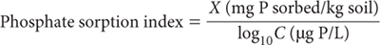
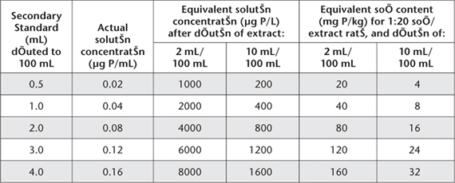

A standardised P sorption measurement, which embraces adsorption as well as precipitation reactions, can reveal useful information at relatively low analytical cost. Bache and Williams (1971) introduced the concept of a P index, based on one addition of 150 mg P/100 g soil in ≈0.02 M potassium chloride (KCl) in the ratio 1:20 g/mL.
In Australia, Holford and Cullis (1985) demonstrated that a one-addition concentration of 248 mg P/kg provided a useful ‘P index’ for wheat-growing soils of NSW. Moody et al. (1988) subsequently preferred a one-addition concentration range between 60 and 248 mg P/kg. The single-addition for this method is equivalent to 150 mg P/kg soil as potassium dihydrogen orthophosphate (KH2PO4) contained in an Extracting Solution of 0.02 M KCl at a soil/solution ratio of 1:20 for 17 h. Residual H2PO4– in the equilibrating solution is determined by the method of Murphy and Riley (1962). The P sorption index is then calculated. It is typically reported on an air-dry basis without the inclusion of units [(mg/kg)/(log10 μg/L)].
Phosphate Equilibrating Solution
1 L contains 7.50 mg of P.
Dissolve 0.1648 g potassium dihydrogen orthophosphate (KH2PO4; previously dried at 130°C for 2 h) in deionised water. Also dissolve 7.455 g KCl in deionised water. Mix, and make volume to 5.0 L.
0.02 M Potassium Chloride
Dissolve 1.49 g KCl in deionised water and make volume to 1.0 L.
Reagent A (Ammonium Molybdate – Sulfuric Acid – Sb Solution)
As for Method 9A2.
Mixed Colour Reagent
As for Method 9C1.
Phosphorus Primary Standard
As for Method 9A2.
Phosphorus Secondary Standard
1 L contains 4 mg of P.
Pipette 8 mL P Primary Standard into a 100 mL volumetric flask, containing some 0.02 M KCl. Mix and dilute to volume with 0.02 M KCl.
Wash glassware and filter papers used for filtration and colorimetric analysis before use with dilute (1+4) HCl then rinse and dry.
Weigh 2.50 g air-dry soil (<2 mm) into a 250 mL flask or bottle and add 50 mL P equilibrating solution and 3 drops of chloroform (CHCl3). Stopper and shake for 17 h continuously at 25°C on a slow end-over-end shaker. Centrifuge or filter the extract through a Whatman No. 42 filter paper. Pipette 2 mL clear extract (weakly sorptive soil) or up to 10 mL clear extract (strongly sorptive soil) into a 100 mL volumetric flask. To each add ≈60 mL 0.02 M KCl, mix, then add 8 mL Mixed Colour Reagent, dilute to volume with 0.02 M KCl and mix well. Treat a reagent blank in a similar way.
Concurrently take 0.5, 1.0, 2.0, 3.0 and 4.0 mL aliquots of P Secondary Standard in 100 mL volumetric flasks containing ≈60 mL of 0.02 M KCl.
Add 8 mL Mixed Colour Reagent, dilute to volume with 0.02 M KCl and mix well. Phosphorus concentrations are given in Table 9.6.
After 30 min (colour is stable for some time beyond this) measure absorbance at 882 nm (preferred) or 720 nm of samples, standards and reagent blank, against water as a reference.
Prepare a calibration curve (or regression equation) of absorbance against concentration of the working standards. Read final concentrations of P in the soil extracts as μg P/L to give the supernatant P concentration ‘C’ and also as mg P/kg soil, required for the determination of P sorbed ‘X’. Make appropriate adjustments if dilutions of soil extracts or working standards differ from those in Table 9.6, and subtract the reagent blank.
The preferred units to express the P sorption index (X/log10C) are mg P sorbed/kg soil for ‘X’ and μg P/L for concentration in the final supernatant solution, ‘C’, since they give a convenient range of values for the P sorption index of most soils. To calculate:
Subtract the supernatant P concentration, expressed as mg P/kg soil from 150 mg P/kg soil (the concentration of P initially added). The resultant gives P sorbed ‘X’.

Report P sorption index on an air-dry basis.
Table 9.6. ConcentratŠns of P in Working Standards for P sorptŠn index.
